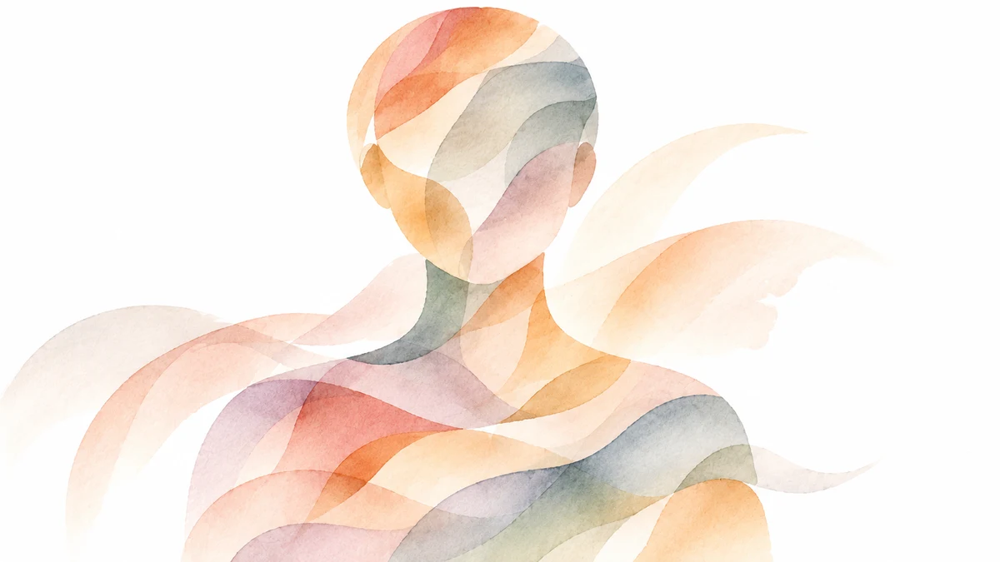

Статьи
Мне интересно исследовать, как устроена наша психическая жизнь, почему мы чувствуем то, что чувствуем, и как складываются наши отношения с миром. В этом разделе я делюсь своими соображениями на эти темы и предлагаю разные способы посмотреть на привычные явления.
Рубрики и статьи
- О терапии
- Тревогаскоро
- Стыд и винаскоро
- Контрольскоро
- Отношенияскоро
- Внутренние конфликтыскоро
О терапии
Чем отличается психолог от психотерапевта и психиатра
Описание в 1–2 строки – на этапе деталейО терапии
Как выбрать психолога
Описание в 1–2 строки – на этапе деталейО терапии
Как проходит первая консультация
Описание в 1–2 строки – на этапе деталей
О терапии